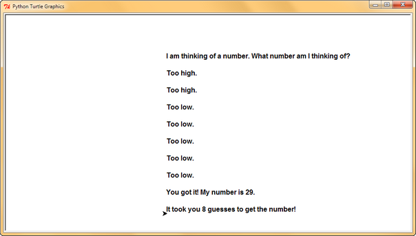

The Main Focus of this Lab
- In this lab, you focus on:
- making a loop to do something again and again, for a guessing game
- logical thinking, handling input, using variables, converting from text to integer, and comparisons
What You Will Learn in This Lab
- In this lab, you will gain experience in the following areas:
Topic Computer Science/ Programming Concept Storing things Using variables Handling text input and output Using input()to read text inputUsing print()to show text outputRandom number generation Getting random integers using random.randint()Data conversion Converting any value to an integer with int()Converting any value to a string with str()Making decisions Writing If statements ( if ... elif ... else ...)Building conditions using comparison operators <and>, and logical operatororRepeating things using loops Using while loops ( while ...)Using the turtle graphics module Getting text input using turtle.textinput()Clearing the turtle window using turtle.clear()Showing text inside a turtle window using turtle.goto()andturtle.write()
Overview
- Note: The overview video shows the text version of the guessing game. In this lab, you need to convert the game to the turtle graphics version
- In this session, you need to create a simple guessing game by writing your own Python code
- Here is an example display of the game being played:
- At the beginning of the game, an integer random number is generated, but is not shown to the player
- To play this game, the player has to repeatedly type the number he/she guesses and press the 'Enter' key to check if the correct number has been guessed
- An example will be shown during the lab session
- Finally, we will convert the game so it uses turtle graphics
Lab Content
- 1. Getting Started
- 1.1. Activating your CSD account
- 1.2. Downloading the template file
- 1.3. Using IDLE
- 2. Implementing the Guessing Game
- 2.1. Introduction
- 2.2. Creating an integer random number
- 2.3. Checking the player's guess
- 2.3.1. Is guess_input < 1 or > 100?
- 2.3.2. Is guess_input > target?
- 2.3.3. Is guess_input < target?
- 2.3.4. Final stage
- 2.4. Counting the number of guesses
- 3. Converting to Turtle Graphics
- 3.1. Introduction
- 3.2. Turtle input
- 3.3. Turtle output
- 3.4. Clearing the screen
- 3.5. Changing the font of the text
- 3.6. Moving the text down the page
- Video locations
Lab Procedure
1. Getting Started
Video for Getting Started
- Note: The video is using Python 3.8. And in this semester, you should use Python 3.9 instead
- Note: That means you should find "IDLE (Python 3.9 64-bit)" Instead
1.1 Activating your CSD account
- After having a CSD account, you can get access to course webpage when you are outside the Campus
- If you haven't done so you need to activate the account through the following link:
https://password.cse.ust.hk:8443/pass.html
- For detailed instructions see the last few slides of the course details notes
1.2 Downloading the template file
- A template file (guess.py) is given to you as a starting point here (right click on the link, select 'Save Target As')
- You can use software such as IDLE to edit the source code to do this work
1.3 Using IDLE
- Here are some ways you can use IDLE
- The default way is using IDLE in a Windows 10 machine
- Please click the following buttons to see the instructions in other platforms:
Using IDLE in a Windows 10 machine
- To use IDLE in a Windows 10 machine, you can go to the start menu, scroll down to see "Python 3.9" folder, like this:
- Alternatively, you can type "Python 3.9" on the search bar of the start menu
- Run IDLE by clicking on the IDLE icon
- After running IDLE you can see the IDLE Python shell, like this:
{kind=link}
Using IDLE in a Windows 11 machine
- To use IDLE in a Windows 11 machine you can click the search button (i.e., the magnifying glass icon) on the menu bar
- Type "IDLE" on the search bar, like this:

Click to see the image in full size - Run IDLE by clicking on the IDLE icon
- After running IDLE you can see the IDLE Python shell, like this:
Using IDLE in a Mac machine
-
Video for Using IDLE in a Mac machine
- To use IDLE in Mac machine you can click on the Launchpad:

Click to see the image in full size - Find the IDLE button and click on the IDLE icon
- Please do not choose the Python Launcher
- After running IDLE you can see the IDLE Python shell, like this:

Click to see the image in full size
{kind=link}
Using IDLE in the ITSC Virtual Barn
- Alternatively, you can use Python IDLE in the ITSC Virtual Barn
- The Virtual Barn is available anytime via the Internet
- You could do this anywhere in campus, and you can access it using your Mac/PC computers, tablets and mobile devices
- The instructions below are for Windows machine, however, the instructions will be similar in different devices e.g. Mac, tablets and mobile devices
- To use the Virtual Barn in a Windows machine, follow these steps:
- In the Start Menu, go to
VMWare » VMWare Horizon Client
- In the VMware Horizon Client window, if you cannot see
vdi.ust.hkalready shown, simply chooseAdd ServerType
vdi.ust.hkas the name of the Connection Server - Log in using your ITSC username/password

- Please choose your the way to do 2FA (2 Factor Authentication), or enter the passcode in your Duo Security Mobile App

- Choose the Programming Software

- After waiting for a while, you will see the Windows desktop. Go to the Start Menu and look for folder
Python 3.9in Start Menu, then executeIDLE (Python 3.9 64-bit).
- In the Start Menu, go to
- You may install VMWare Horizon Client and access Virtual Barn on your own devices
- To know more about the ITSC Virtual Barn, you can refer to this page
2. Implementing the Guessing Game
Video for Implementing the Guessing Game
Note: There is a typo "Tooo high" in the video. The correct word should be "Too high".
2.1. Introduction
- Here is a flow diagram of the main part of the game:
- The guessing game program will take the text input from the user and return the text output:
- Open the template file (guess.py), which was downloaded in Section1.2, by selecting
File » Open - We will edit the template file to do the following steps
2.2. Creating an integer random number
- When the program starts it needs to create an integer random number which is the number that the player has to guess
- The code shown in the starting point is not complete
- You have to write the code to finish it
- First, you need to use the Python function
random.randint(min, max)to generate the random number as follows:target = random.randint(1, 100)
- The code above generates a random integer number in a range of 1 to 100 (including 1 and 100), e.g. 54
- So now the variable
targetstores the random number that the player has to guess - Let's also tell the user that this number is ready:
print("I am thinking of a number. What number am I thinking of?") - The player needs to guess the number in a loop as follows. It's pseudo-code. Can you write it in Python?
while not finished : guess_input_text = input("Please enter a number between 1 and 100: ") check what the user types in, if it is correct, then we have finished
- The
inputfunction shows a message which asks the player to enter his guess - Then we check if the player has a correct guess
- The true (correct) or false (incorrect) result is stored in the variable
finished
2.3. Checking the player's guess
- You have to write the code to check if the player has a correct guess inside the while loop
- Check the flow chart in Section 2.1 for the procedure
- The player's guessed number is stored in the variable
guess_input_text - Because
guess_input_textis actually a piece of text, we need to convert it into a number - We can do this using
int(guess_input_text), for example:guess_input = int(guess_input_text)
- Now the numerical value of player's guessed number is stored in the variable
guess_input
2.3.1. Is guess_input < 1 or > 100?
- Before we check if the player has the correct guess, we have to make sure the guessed number is in the range of 1 to 100
- If the guessed number is lower(smaller) than 1 or higher(greater) than 100, we tell the player to enter a number in the correct range, i.e.
if guess_input < 1 or guess_input > 100: print("Please enter an integer number between 1 and 100.") - Finally, we can compare the guessed number with the random number that was generated at the beginning of the game
2.3.2. Is guess_input > target?
- The guessed number is higher(greater) than the player's random number, e.g.
guess_input target 80 75 - In this situation you need to tell the player to try again with a lower(smaller) number
2.3.3. Is guess_input < target?
- The guessed number is lower(smaller) than the player's random number, e.g.
guess_input target 10 75 - In this situation you need to tell the player to try again with a higher(greater) number
2.3.4. Final stage
- If none of the above conditions is correct, the guessed number will be the computer's random number
- In this situation you need to tell the player he/ she has a correct guess, e.g.
- Also you need to tell the while loop the game has finished by setting the
finishedvariable to true
2.4. Counting the number of guesses
- After the above steps you now have a working game
- In this part, we will add an additional feature to show the number of guesses that were made before the player got the right answer
- For example, "It took you 8 guesses to get the number!"
- To do this you would have to
- Make a variable at an appropriate place, which will be used to count the guesses, i.e.:
count = 0
- Add 1 to the variable every time a guess is made, like this:
count = count + 1
- Show the value of the variable when the player gets the right answer
- Make a variable at an appropriate place, which will be used to count the guesses, i.e.:
3. Converting to Turtle Graphics
Video for Converting to Turtle Graphics
- Note: There is a typo "Tooo high" in the video. The correct word should be "Too high".
- Note: You do not need to expand the window size if the messages go out of the window. You can assume the user gets the answer within 10 guesses
3.1 Introduction
- You will also try to convert the game so that it uses turtle graphics
- The flow of the game is the same as the above, except that we are now using turtle input and output:
- First, save your work from Section 2 to a new file (guess_turtle.py) by selecting
File » Save as ... - We will edit this new file to convert the game so that it uses turtle graphics
- Add the following line near the top of your program before you start using any other turtle commands:
import turtle
- And add the following line at the end:
turtle.done()
{kind=link}
3.2 Turtle input
- Replace
input()withturtle.textinput():turtle.textinput( title , prompt )
- where title is the title of the dialog window, and prompt is the message which asks for input
- For example:
guess_input_text = turtle.textinput("Guessing Game", "Please enter a number between 1 and 100:") - When you run the program, a dialog window will appear:

3.3 Turtle output
- Replace
print()withturtle.write(), for example:turtle.write("Please enter an integer number between 1 and 100.") - Notice that in order to output the count of guesses as shown in Section 2.4, the line of code should be:
turtle.write("It took you " + str(count) + " guesses to get the number!") - "It took you " and " guesses to get the number!" are two strings, i.e. sequence of characters
- But
countis a variable storing an integer number - In order to concatenate the two strings with the value of
count, we need to convertcountto a string str(count)converts the integer number in the variablecountto a string
3.4 Clearing the screen
- By default,
turtle.write()would not move the turtle position - That means lines of output will overlap each other:
- You can clear the turtle's drawings from the screen before showing the next message
- Add
turtle.clear()beforeturtle.write(), for example:turtle.clear() turtle.write("Too low.") - Then, you will be able to run the guessing game program in turtle graphics:
{kind=link}
3.5 Changing the font of the text
- If you add an extra parameter to
turtle.write(), you can change the way the text looks, like this:turtle.write("Too low.", font=("Arial", 40, "bold")) - The extra parameter specifies the font to be used in the text, it consists of 3 values:
- font name, e.g. "Arial", "Courier", "Times"
- font size, e.g. 40, 11, 8
- font style, e.g. "bold", "italic", "normal"
- The parameter
font=("Arial", 40, "bold")changes the text displayed to Arial typeface, size 40 and bold style - The text displayed will be changed to:
turtle.clear()is introduced to demonstrate how to avoid text overlapping problem- We will not include
turtle.clear()in our final number guessing game when we introduce the next topic "3.6 Moving the text down the page"
{kind=link}
3.6 Moving the text down the page
- It is more preferable to change your program so it always moves new text down the page
- Here's an example with 8 guesses:

Click to see the image in full size - Here's how you would do that
- First, remove the
turtle.clear()instruction - Second, add two new variables which store the x position and the y position of the text i.e.
xposition = -100 yposition = 150
- Then, every place you have
turtle.write(), replace it with these three lines:turtle.goto(xposition, yposition) turtle.write(" Put the output text here ") yposition = yposition - 40
- First, remove the
- In this way your text will 'automatically' move down the page
- It's not really necessary to have a variable for the x position, but we do that to make your understanding of what we are doing easier
{kind=link}
Submission
- You have to submit this lab work
- Enter your name and student ID number in the top of your Python code using a comment
- You need to submit within the 5 days following the taught day of your registered lab, before midnight
- The exact times and dates are shown at the end of the marking scheme page
- You can look at the marking scheme to make sure all the parts are done properly
- Submit your work to the COMP1021 Canvas site to the lab assignment for your registered lab section
- Please submit only ONE Python file (guess.py) with Turtle Graphics only
- The text version of the game is for implementing the final version
- Submit your work early, days before the deadline!
- If you find that you have made a mistake after you have submitted your work, you can submit again, as many times as you like, BEFORE the deadline.
- We will mark the most recent submission which is before the deadline.
- You won't be able to submit your work after the deadline!
- Check that you have submitted the correct version of your own file